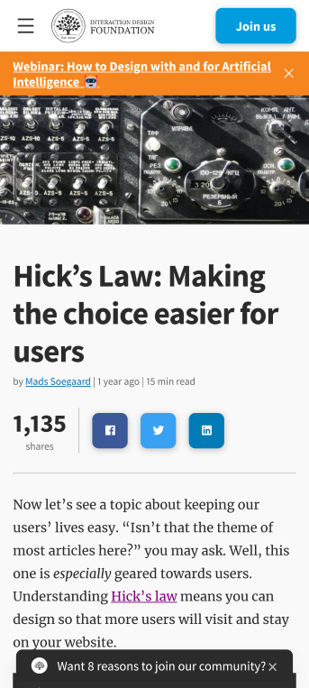
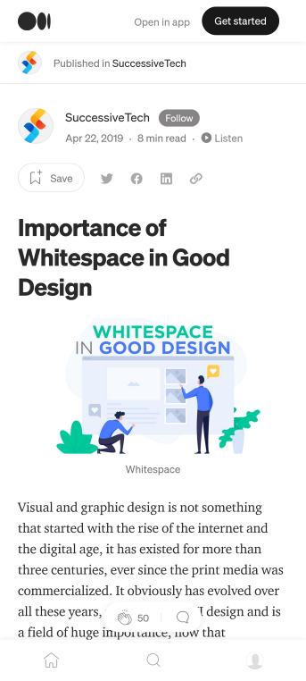
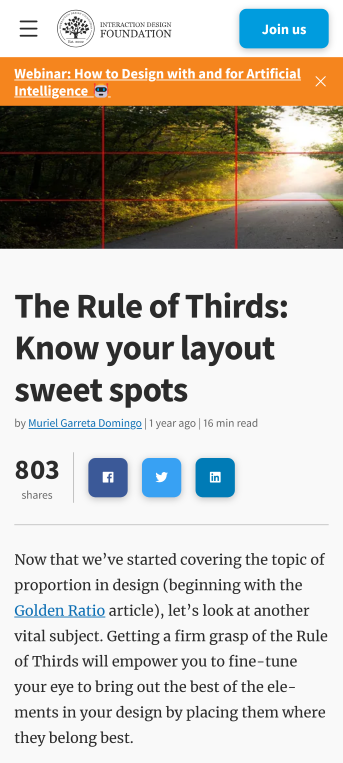

Hicks Law
Interaction Design Foundation
Interaction-design.org Hicks Law is used to give people more choices so that they will stay on your page longer or pages. So having hyperlinks or activities on the page to do will keep them there longer.
White Space and Clean Design
Medium
medium.com You have two different white spaces to think about. The active white space and the passive white space. Active white space is space that you make an effort to give focus to other content. Passive white space is what occurs naturally.
Rules of Thirds
Interaction Design Foundation
Interaction-design.org The rule of thirds is the area you want people to focus on more. You will want to put that in the sweet spot of your page or where ever you want the main focus on the page. Most people will look at a website from the top left first since they want to make sure they are not missing anything on the page.